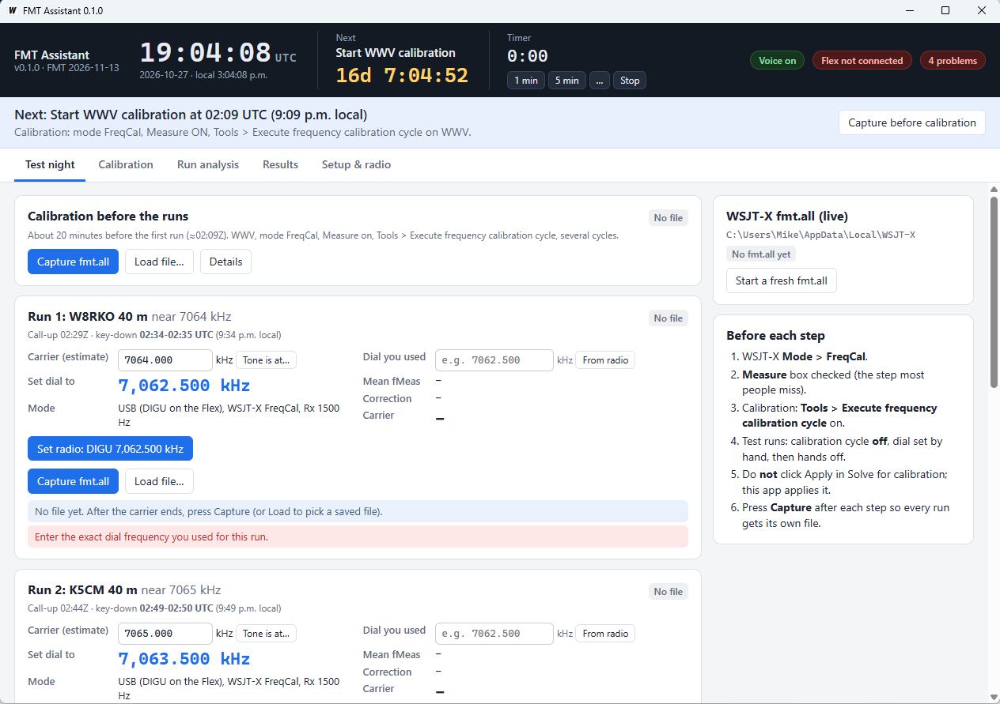

Measure the carrier, not your mistakes.
A Windows companion for the ARRL Frequency Measuring Test using WSJT-X FreqCal. It keeps the clock, tells you what to do and when, collects your measurement files, and works out each carrier frequency to a hundredth of a hertz, checking for the slips that cost points.
Ready for the November 13, 2026 FMT · open source
You still run WSJT-X by hand, exactly as the standard FreqCal procedure describes. FMT Assistant sits beside it and handles the timing, the files, the arithmetic and the double-checking, so you can concentrate on the radio.
A big UTC clock and a countdown to the next event. Spoken prompts tell you when to start calibration, the dial to set at each call-up, two minutes and 30 seconds to go, then count down five beeps to key-down and remind you to capture when the carrier ends.
Each run shows the carrier and the USB dial 1500 Hz below it. If the tone lands off 1500 Hz on the waterfall, type where it is and get a corrected dial.
Capture copies WSJT-X's fmt.all into the right slot (calibration before, four runs, calibration after) and starts a clean file for the next step. Runs can't get mixed together.
The same straight-line calibration fit WSJT-X uses. Weak readings (the * lines) and stations other than WWV are dropped. Each key-down carrier is found automatically, with CW ID and the edges left out.
Dial typos, the wrong file in a slot, a file used twice, WSJT-X's own calibration left on, readings from another run, drift between calibrations. Every result says Ready only when it has passed them all.
The Practice tab runs the full routine on your local AM broadcast station or WWV whenever you like, with the same prompts, capture and analysis as test night.
Pre-loaded with the November 13, 2026 schedule (UTC). Edit it for future tests. The banner under the clock always says what to do now.
The banner changes colour so a glance tells you where you are, and it offers the button you need next.
Prefer quiet? Voice and beeps can each be switched off, and there's a general-purpose 1 min, 5 min or custom timer in the header.
With the USB dial about 1500 Hz below the carrier, WSJT-X FreqCal measures the carrier as an audio tone (fMeas). A WWV calibration measures your radio's error as a straight line, A + B × f. The answer is:
Red means the result isn't Ready until it's fixed; amber means it's worth a look. Every message says what to do.
| Slip | How it's caught |
|---|---|
| Dial typo | WSJT-X logs the station's kHz, so only a 1 kHz range of dials is possible. Typing 7062.152 instead of 7062.512 is flagged at once. |
| Wrong file | A run measured on another station, a calibration file in a run slot (or the reverse), or one file used in two slots. |
| Forgot to capture | Readings that fall in another run's time slot, or a carrier found outside the scheduled key-down. |
| Measure unchecked | The live fmt.all panel shows whether WSJT-X is writing. An empty file is refused at Capture. |
| WSJT-X calibration left on | The app reads WSJT-X's settings. A non-zero intercept or slope moves the radio away from the dial WSJT-X shows. |
| Bad calibration station | Weak (*) readings, AM broadcasters and wild values are left out. A large StdDev points at the odd one out. |
| Radio drifted | Before and after calibrations that disagree by more than 0.3 Hz trigger a warning; averaging them is the default. |
| Dial moved mid-carrier | Readings from two dial settings, or (with a FlexRadio) a slice frequency change logged during key-down. |
Sessions (your six files, dial entries and the report) are kept in Documents\FMT Assistant.
Get FMTAssistant.exe and run it; there's no installer. Windows SmartScreen may ask once, because the exe isn't code-signed: choose More info › Run anyway.
Use Mode › FreqCal, keep only the WWV frequencies you can hear, and set the calibration intercept and slope in Settings to 0. Find the Measure box.
In Setup & radio, choose the WSJT-X log folder (it can be on another PC) and press Test for the voice. Then do a run on the Practice tab.
The README has the full guide: setup, a rehearsal, every step of test night, each screen, every warning and what to do about it, and troubleshooting.
Your local AM broadcaster is a strong, steady carrier on a round frequency: ideal for rehearsing. Type its frequency, choose how long you need to get ready, and the app counts you into a one-minute measurement with the same prompts as test night.
Broadcasters aren't frequency standards, and are often a hertz or two off nominal. What you're practising is the routine and steady readings. For an exact reference, practise on WWV.
Tick one box and the app finds your FlexRadio on the LAN. Set radio puts the slice in DIGU on the right dial, with RIT off and no DIGU offset, and confirms it with the radio. It can also tune automatically at each call-up.
It reads the dial back for you, and warns if the dial moves during a carrier. It never transmits. Leave it off and everything works the same with any radio.
New for the November 2026 FMT. Here's where it stands.
fmt.all read from a network drive; Set radio on a FLEX-6600M.For the curious. The calibration follows WSJT-X's own freqcal, calibrate and fitcal routines, after K1JT's Accurate Frequency Measurements with your WSPR Setup.
| Step | What happens |
|---|---|
| Readings | Each fmt.all line is UTC kHz CAL Offset fMeas DF Level S/N [*]. The kHz column is (dial + offset) / 1000, rounded down, which is what lets the app check your dial. |
| Calibration | Readings below the S/N limit (20 dB) and outliers are dropped. Each WWV station's mean DF is a point, and an unweighted least-squares line DF = A + B·f gives A, B, their uncertainties and the StdDev. |
| Carrier | The longest unbroken stretch of strong readings near the scheduled key-down. Readings outside key-down, the first and last, and anything more than max(0.75 Hz, 5σ) from the median are dropped; you can override any reading. |
| FlexRadio | UDP 4992 discovery, then the SmartSDR API on TCP 4992: slice set N mode=DIGU, digu_offset=0 rit_on=0, slice tune N f, confirmed by re-subscribing to slice status. |
| Voice | The Windows speech voice (SAPI), with beeps from the page itself. |
Go with Wails for the window. The interface is one plain HTML file, so there's no Node.js build step.
# tests, including simulated calibrations and runs go test ./... # Windows exe in build\bin wails build -ldflags "-s -w"